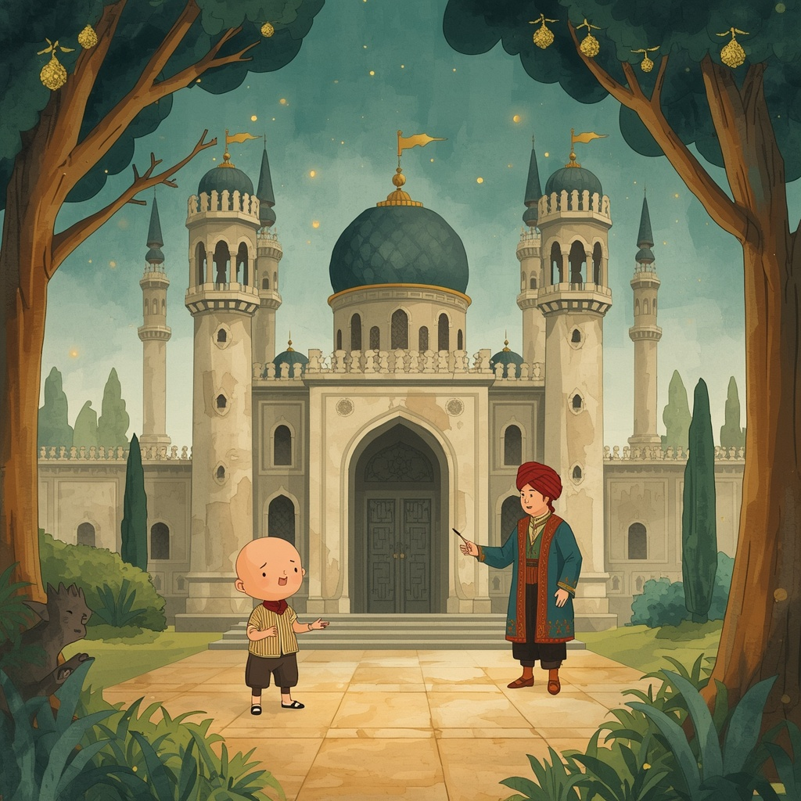
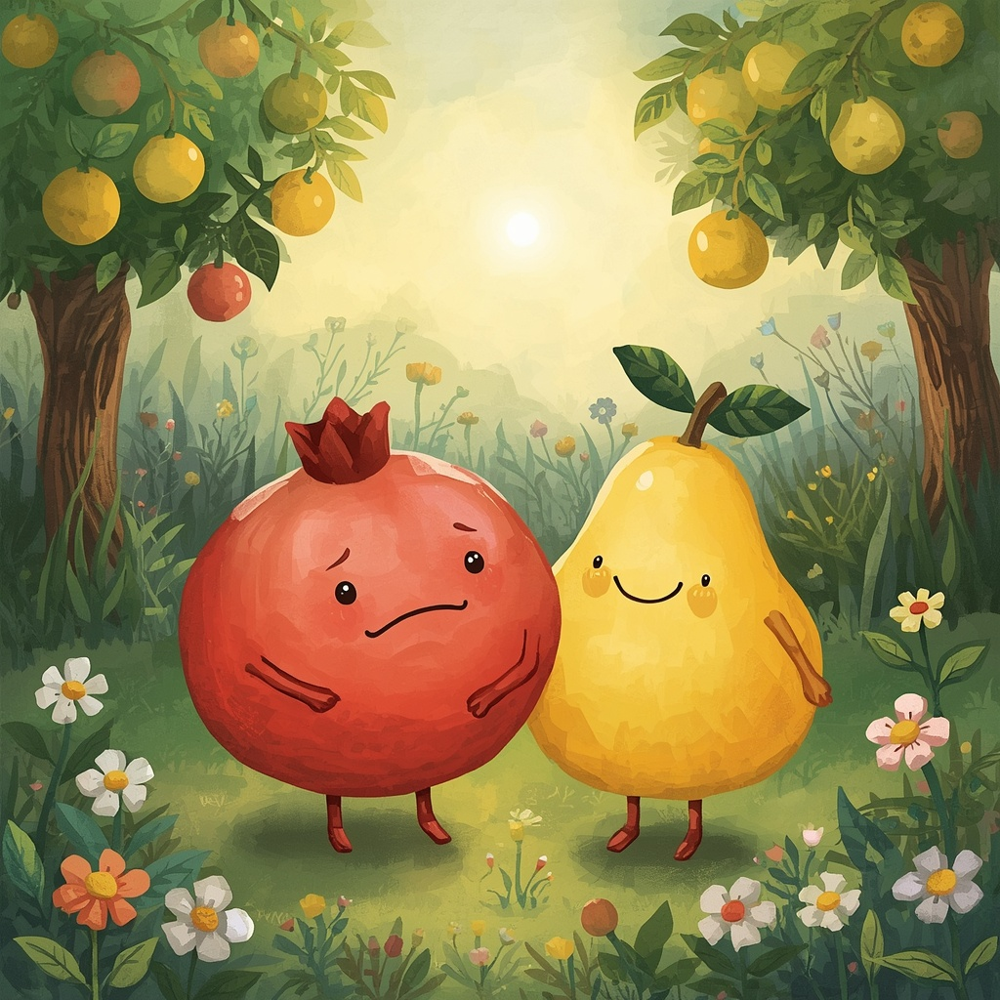
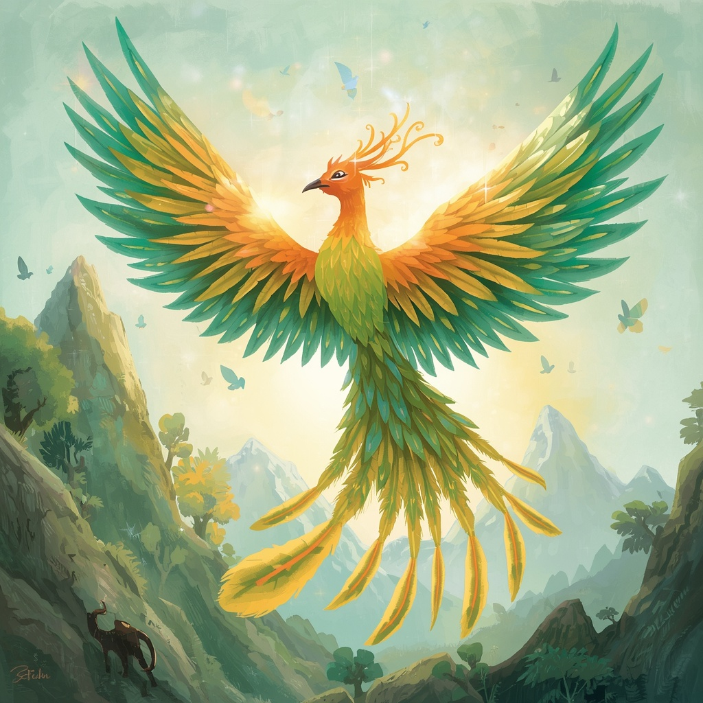
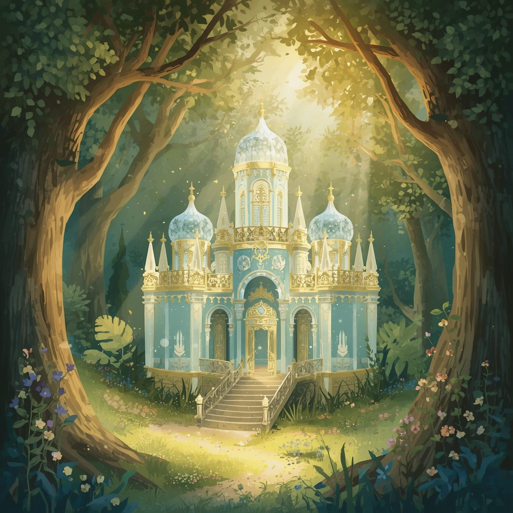
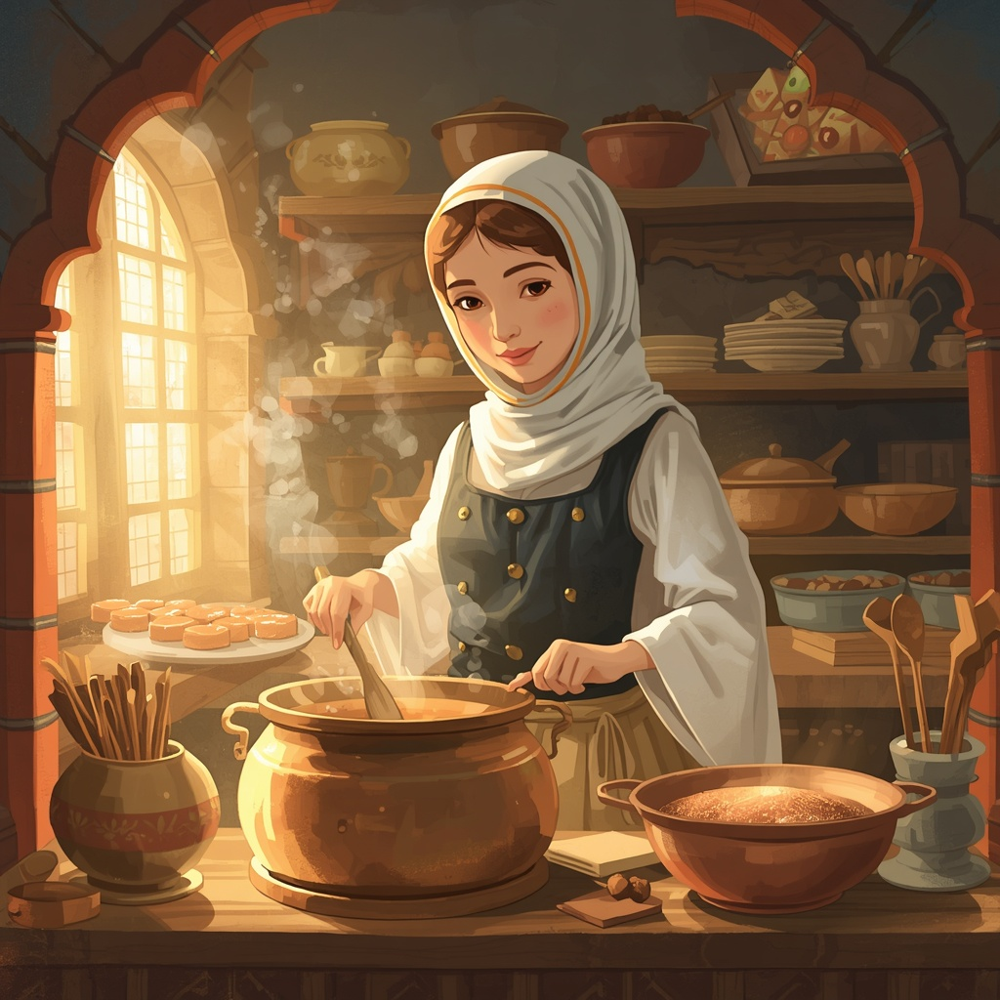
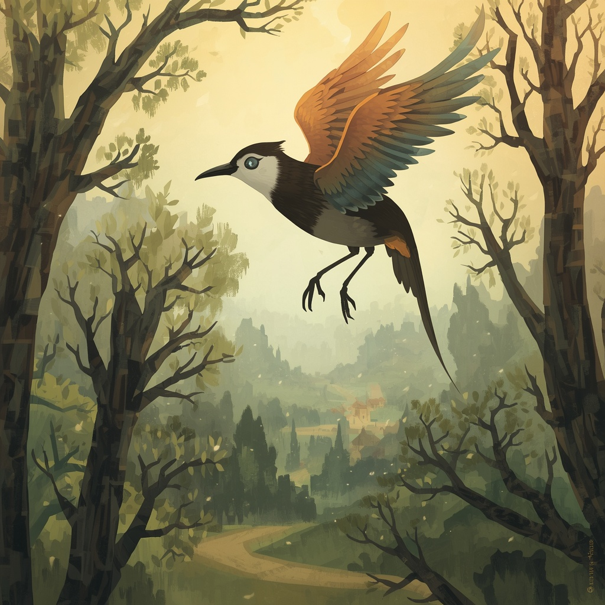
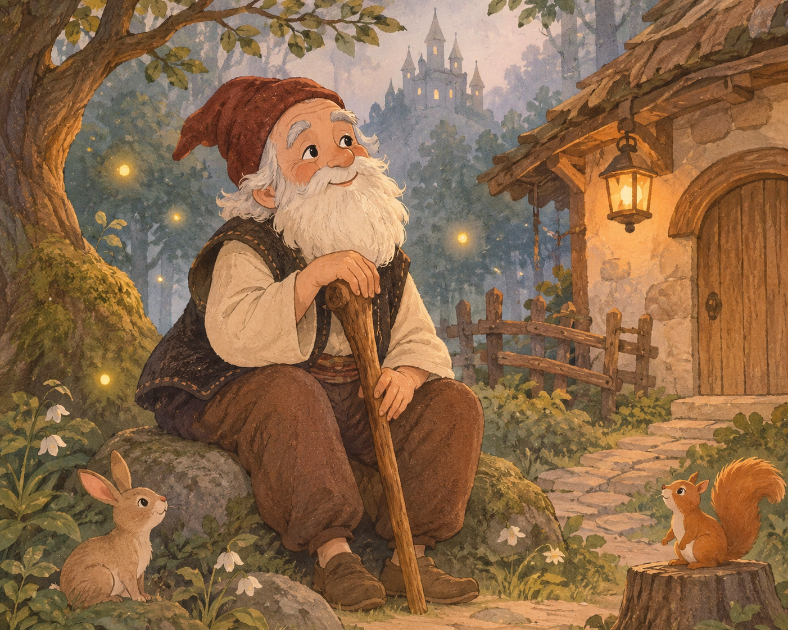
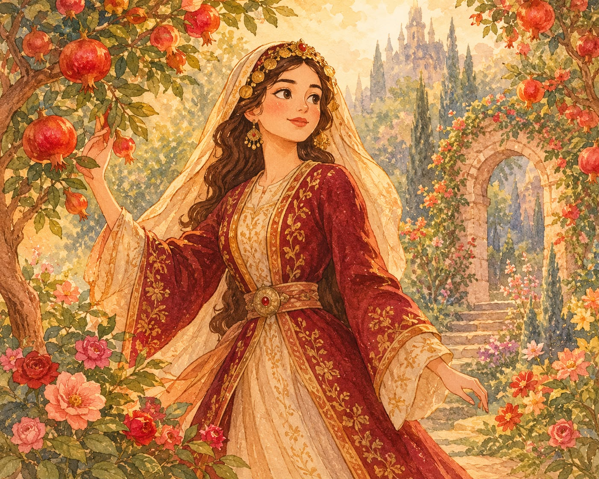

✧ BİR ZAMANLAR, UZAK DİYARLARDA ✧
Bir zamanlar, uzak diyarlarda...
Her ağacın ardında başka bir hikâye, her patikanın sonunda yeni bir macera saklı. Türk masallarının büyülü dünyasını keşfetmeye hazır mısın?
Her masal, bambaşka bir dünyaya açılan kapıdır.
Cesareti ve zekâsıyla zorlukları aşan Keloğlan'ın hikâyesi.
Gizemli olaylarla dolu, sevgi ve iyilik üzerine bir masal.
Küllerinden yeniden doğan efsanevi kuşun büyülü yolculuğu.
Gizemli bir köşkte geçen, sabır ve cesaret dolu bir masal.
Güzelliği ve iyiliğiyle dillere destan olan genç bir kızın hikâyesi.
Gizemli bir kuşun peşinde gelişen büyülü bir yolculuk.
İyilik, sabır ve akıl üzerine geleneksel bir Anadolu masalı.
Zorluklara karşı mücadele eden genç bir kadının masalı.

Bir varmış, bir yokmuş. Evvel zaman içinde, uzak bir köyde annesiyle birlikte yaşayan yoksul bir Keloğlan varmış. Keloğlan'ın fazla parası yokmuş ama kalbi temiz ve çok akıllıymış.
Bir gün Keloğlan yolda ilerlerken yardıma muhtaç bir kedi, bir köpek ve bir yılanla karşılaşmış. Onlara acımış ve elinden geldiğince yardım etmiş. Hayvanlar da bu iyiliği unutmamış.
Yılanın aslında Yılanlar Padişahı'nın oğlu olduğu ortaya çıkmış. Keloğlan'ın iyiliğine karşılık ona sihirli bir mühür vermiş. Bu mühür sayesinde Keloğlan dilediği şeyleri gerçekleştirebilecekmiş.
Keloğlan mührü kullanarak kendisine güzel bir saray yaptırmış. Zamanla padişahın huzuruna çıkmış ve onun kızlarından biriyle evlenmiş. Ancak mutluluğu uzun sürmemiş. Kötü niyetli biri sihirli mührü çalarak sarayı ortadan kaldırmış.
Keloğlan çok üzülmüş ama ona daha önce yardım ettiği kedi ve köpek hemen harekete geçmiş. Birlikte mührü aramaya başlamışlar. Uzun uğraşlar sonunda mührün bir balığın karnında olduğunu öğrenmişler.
Kedi ve köpek balığı bulup mührü geri almayı başarmış. Keloğlan da mührü yeniden kullanarak sarayını geri getirmiş. Böylece ailesiyle birlikte mutlu yaşamışlar.
Keloğlan, iyiliğin ve yardımlaşmanın karşılıksız kalmayacağını bir kez daha göstermiş.
Gökten üç elma düşmüş: Biri anlatana, biri dinleyene, biri de iyilikten vazgeçmeyene...

Bir varmış, bir yokmuş. Uzak bir ülkede dokuz kız çocuğu olan bir padişah yaşarmış. Padişahın tek isteği,kendisinden sonra tahta geçeçek bir erkek evlada sahip olmakmış. Bir süre sonra sultan yeniden hamile kalmış ve bir kız çocuğu dünyaya getirmiş. Ancak padişahın öfkesinden korkan annesi, bebeği erkek olarak tanıtmış.
Küçük kız, yıllarca erkek çocuğu gibi büyütülmüş. Babası onun sünnet olma zamanı geldiğinde gerçeğin ortaya çıkmasından korkan annesi çok üzülmüş. Durumu öğrenen genç kız, annesini rahatlatmak için saraydan ayrılmaya karar vermiş.
Sarayın ahırında karşılaştığı kara yağız at, ona yardım etmeyi kabul etmiş. Genç kız ata binerek uzak diyarlara gitmiş. Yol boyunca birçok zorlukla karşılaşmış ve cesareti sayesinde bu zorlukları aşmış.
Bir süre sonra başka bir sarayda yaşamaya başlamış. Burada kendisini kanıtlamak için tehlikeli görevleri yerine getirmiş. Son görevinde ise periler padişahının bahçesinde bulunan özel bir ağacı getirmesi istenmiş. Bu ağacın bir dalında ağlayan narlar, diğer dalında ise kahkahalarla gülen ayvalar varmış.
Kara yağız atın yardımıyla genç kız ağaca ulaşmayı başarmış ve onu saraya getirmiş. Böylece kendisinden istenen bütün görevleri tamamlamış. Cesareti ve zekâsıyla herkesin takdirini kazanmış.
Gökten üç elma düşmüş: Biri anlatana, biri dinleyene, biri de zorluklar karşısında pes etmeyene...

Bir varmış, bir yokmuş. Uzak bir ülkede halkı tarafından sevilen yaşlı bir padişah yaşarmış. Padişahın üç oğlu varmış. Sarayının bahçesinde ise yılda yalnızca bir kez üç altın elma veren özel bir ağaç bulunurmuş.
Ne zaman elmalar olgunlaşsa yedi başlı bir dev ortaya çıkar ve onları dalından koparıp götürürmüş. Padişah ağacı korumak için büyük oğullarını sırayla nöbete dikmiş. Ancak ikisi de devin karşısında korkup görevlerini yerine getirememiş.
Sıra en küçük oğula geldiğinde genç şehzade kararlılıkla ağacın başında beklemiş. Gece yarısı dev ortaya çıkınca onunla mücadele etmiş ve devi yaralamayı başarmış. Ardından kardeşleriyle birlikte devin izini sürmüş.
İzler onları derin bir kuyunun ve yer altındaki gizemli bir dünyanın kapısına götürmüş. Büyük kardeşleri aşağı inmeye cesaret edememiş. En küçük şehzade ise korkusuna rağmen yoluna devam etmiş ve birçok zorlukla karşılaşmış.
Sonunda yeryüzüne çıkabilmek için Kaf Dağı'nda yaşayan Zümrüdüanka Kuşu'ndan yardım istemesi gerektiğini öğrenmiş. Uzun ve tehlikeli yolculuğunun ardından kuşu bulmuş. Zümrüdüanka, cesur şehzadeye yardım etmeyi kabul etmiş.
Böylece şehzade, karşılaştığı güçlükleri aşarak yeniden yeryüzüne ulaşmış. Cesareti ve azmi sayesinde ailesine kavuşmuş ve ülkesine dönmüş.
Gökten üç elma düşmüş: Biri anlatana, biri dinleyene, biri de zorluklar karşısında cesaretini kaybetmeyene...

Bir varmış, bir yokmuş. Uzak bir ülkede yaşayan bir padişahın uzun zamandır beklediği bir kızı olmuş. Ancak kızının küçük yaşta hastalanmasından korkan padişah, onu yer altında özel bir mağarada büyütmüş.
Yıllar geçmiş ve sultan genç bir kız olmuş. Bir gün bahçede dolaşırken denizi görmüş ve babasından denizin ortasına billurdan bir köşk yaptırmasını istemiş. Padişah kızının isteğini kabul etmiş ve kısa süre sonra çok güzel bir köşk yapılmış.
Bir gün Yemen padişahının oğlu gemisiyle bu köşkün yakınından geçmiş. Sultan onu görünce çok etkilenmiş. Genç şehzade de sultanı çok beğenmiş ancak kısa süre sonra ülkesine dönmüş.
Sevdiği genci yeniden görebilmek isteyen sultan, babasından elmaslarla süslü bir gemi istemiş. Hazırlıklar tamamlanınca gemisine binerek şehzadenin ülkesine doğru yola çıkmış.
Şehzade, sultanın ülkesine geldiğini öğrenince onu bulmak için harekete geçmiş. Birbirlerini yeniden gördüklerinde daha önce billur köşkte karşılaştığı kişinin aynı genç kız olduğunu anlamış.
Böylece uzun bir yolculuğun ardından birbirlerine kavuşmuşlar. İki genç muratlarına ermiş, mutluluk içinde yaşamışlar.
Gökten üç elma düşmüş: Biri anlatana, biri dinleyene, biri de sevdiğine kavuşmak için yolculuğa çıkana...

Bir varmış, bir yokmuş. Güzelliğiyle tanınan genç bir kız, ailesiyle birlikte yaşarmış. Bir gün anne ve babası hacca gitmeye karar vermiş. Kızlarını ise güvendikleri bir hocaya emanet etmişler.
Ancak hoca, kendisine emanet edilen kıza kötü gözle bakmaya başlamış. Genç kız onun gerçek niyetini anlayınca evden kaçmış ve kendisine güvenli bir yer bulmak için yola çıkmış.
Hoca, yaptığı kötülüğün ortaya çıkmasından korkmuş ve kız hakkında ailesine yalan söylemiş. Bu sözlere inanan babası, oğlundan ablasını cezalandırmasını istemiş. Fakat kardeşi gerçeği öğrenince ablasına kıyamamış ve onu serbest bırakmış.
Genç kız uzun süre yolculuk etmiş ve sonunda başka bir ülkeye ulaşmış. Burada tanınmamak için kılık değiştirmiş ve bir helvacının yanında çalışmaya başlamış. Hazırladığı helvalar kısa zamanda herkesin beğenisini kazanmış.
Bir gün, genç kızın geçmişte evlendiği şehzade onu aramak için bu şehre gelmiş. Yolları helvacı dükkânında kesişmiş. Genç kız yaşadıklarını anlatarak gerçek kimliğini açıklamış. Şehzade de sonunda sevdiği kadını bulmuş.
Böylece Helvacı Güzeli, yaşadığı bütün zorluklara rağmen yeniden sevdiklerine kavuşmuş. Gerçekler ortaya çıkmış ve ona kötülük yapanların yalanları anlaşılmış.
Gökten üç elma düşmüş: Biri anlatana, biri dinleyene, biri de zorluklar karşısında umudunu kaybetmeyene...

Bir varmış, bir yokmuş. Bir ülkede annesiyle birlikte yaşayan Sülün adında genç bir kız varmış. Babasını kaybettikten sonra annesiyle çalışıp geçinmeye başlamışlar. Zamanla güzel bir evleri ve bağları olmuş.
Ancak Sülün, her şey yolunda olsa bile sürekli geleceği düşünür, başlarına kötü bir şey geleceğinden korkarmış. Annesi onu ne kadar teselli etse de genç kız kaygılanmaktan vazgeçmezmiş.
Bir gün bahçede dolaşırken Tasa Kuşu'yla karşılaşmış. Kuş, genç kızı kanatlarının arasına alarak onu uzak, yemyeşil bir bahçeye götürmüş. Sülün burada bile güzelliklerin tadını çıkarmak yerine göremediği ve duyamadığı şeyler için üzülmeye başlamış.
Sülün'ün bu bitmeyen kaygıları yüzünden bahçedeki kuşlar susmuş, pınarlar kurumuş ve ağaçlar meyve vermez olmuş. Tasa Kuşu ona sürekli endişelenmenin insanın mutluluğunu nasıl gölgelediğini göstermiş.
Bir süre sonra kuş uçup gitmiş. Genç kız derin bir nefes alarak rahatlamış. O anda karşısına ak sakallı bir dede çıkmış. Dede ona ne dilediğini sorunca Sülün hiç düşünmeden annesine kavuşmak istediğini söylemiş.
Gözlerini açtığında kendisini yeniden annesinin yanında bulmuş. Yaşadıklarından ders çıkaran Sülün, artık hayatın güzel yanlarını görmeye başlamış. Annesiyle birlikte mutlu bir yaşam sürmüş.
Gökten üç elma düşmüş: Biri anlatana, biri dinleyene, biri de güzel günlerin kıymetini bilene...

Bir varmış, bir yokmuş. Bir evde anneleriyle birlikte yaşayan üç kız kardeş varmış. Bir gün köylerine iğ satan yaşlı bir adam gelmiş. Kızlar iğlerini beğenmeyince adam, evinde daha güzellerinin olduğunu söylemiş.
Önce büyük kardeş, ardından ortanca kardeş yaşlı adamın evine gitmiş. Ancak ikisi de geri dönmemiş. Sıra küçük kardeşe geldiğinde kız, ablalarının neden dönmediğini merak etmiş ve yanına kedisini alarak yola çıkmış.
Yaşlı adam küçük kızı da kandırmaya çalışmış. Ona yemek olarak kendi parmağını vermiş. Küçük kız ise parmağı gizlice kedisine yedirmiş. Böylece yaşlı adamın tuzağını fark etmesini engellemiş.
Bir süre sonra kız, yaşlı adamın evinde esir tutulan bir delikanlıyla karşılaşmış. Birlikte bir kaçış planı yapmışlar. Yaşlı adamı uyutmayı başararak evden kaçmışlar ve özgürlüklerine kavuşmuşlar.
Böylece küçük kız, aklını ve cesaretini kullanarak hem kendisini hem de delikanlıyı kurtarmış.

Bir varmış, bir yokmuş. Nardaniye Hanım adında güzelliğiyle tanınan genç bir kız yaşarmış. Annesi vefat ettikten sonra babası yeniden evlenmiş. Ancak üvey annesi zamanla Nardaniye'yi kıskanmaya başlamış.
Üvey annesi, genç kızdan kurtulmak için kötü bir plan yapmış. Ona çok tuzlu yiyecekler yedirmiş. Nardaniye su isteyince içine küçük bir yılan bıraktığı suyu vermiş. Yılan zamanla büyümüş.
Üvey anne, bu durumu bahane ederek Nardaniye'ye iftira atmış ve evden kovulmasını sağlamış. Fakat genç kız hayatta kalmayı başarmış. Üvey annesi onun yaşadığını öğrenince yeniden bir tuzak kurmuş ve zehirli bir sakız göndermiş.
Sakızı çiğneyen Nardaniye derin bir uykuya dalmış. Onu bulan bir şehzade, boğazına takılan sakızı çıkarınca genç kız yeniden kendine gelmiş. Nardaniye başından geçenleri şehzadeye anlatmış.
Gerçekler ortaya çıkınca üvey annenin kötülükleri anlaşılmış ve cezalandırılmış. Nardaniye Hanım ise şehzadeyle birlikte yeni ve mutlu bir hayata başlamış.
Böylece Nardaniye Hanım, karşılaştığı bütün zorluklara rağmen yeniden mutluluğa kavuşmuş.